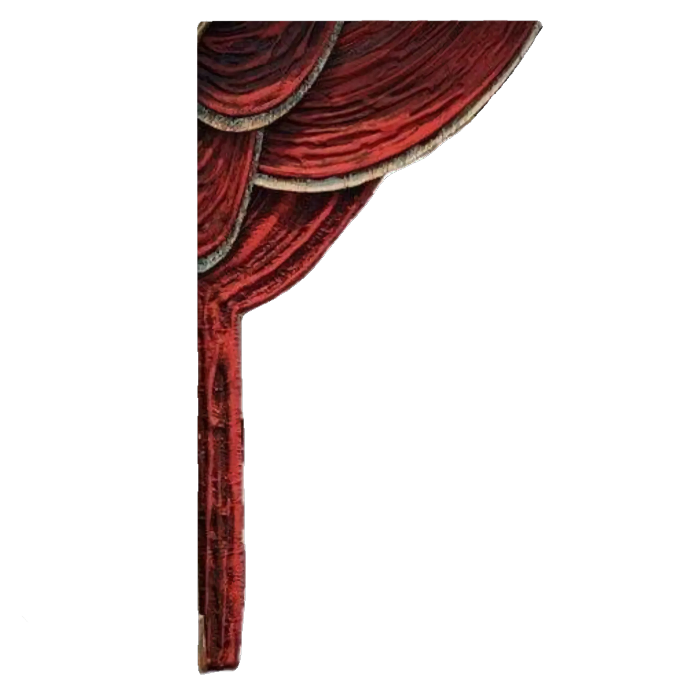
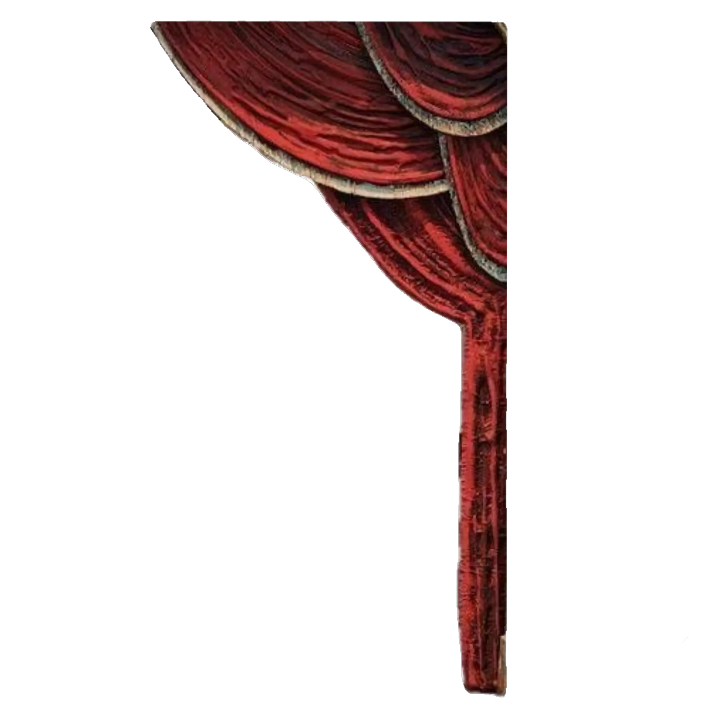
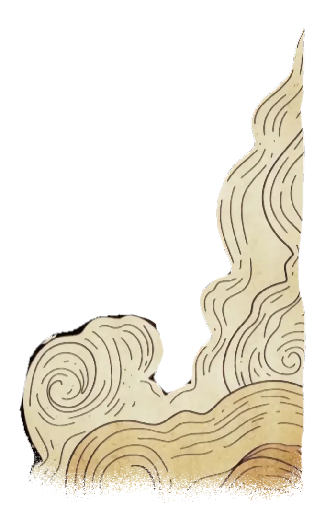
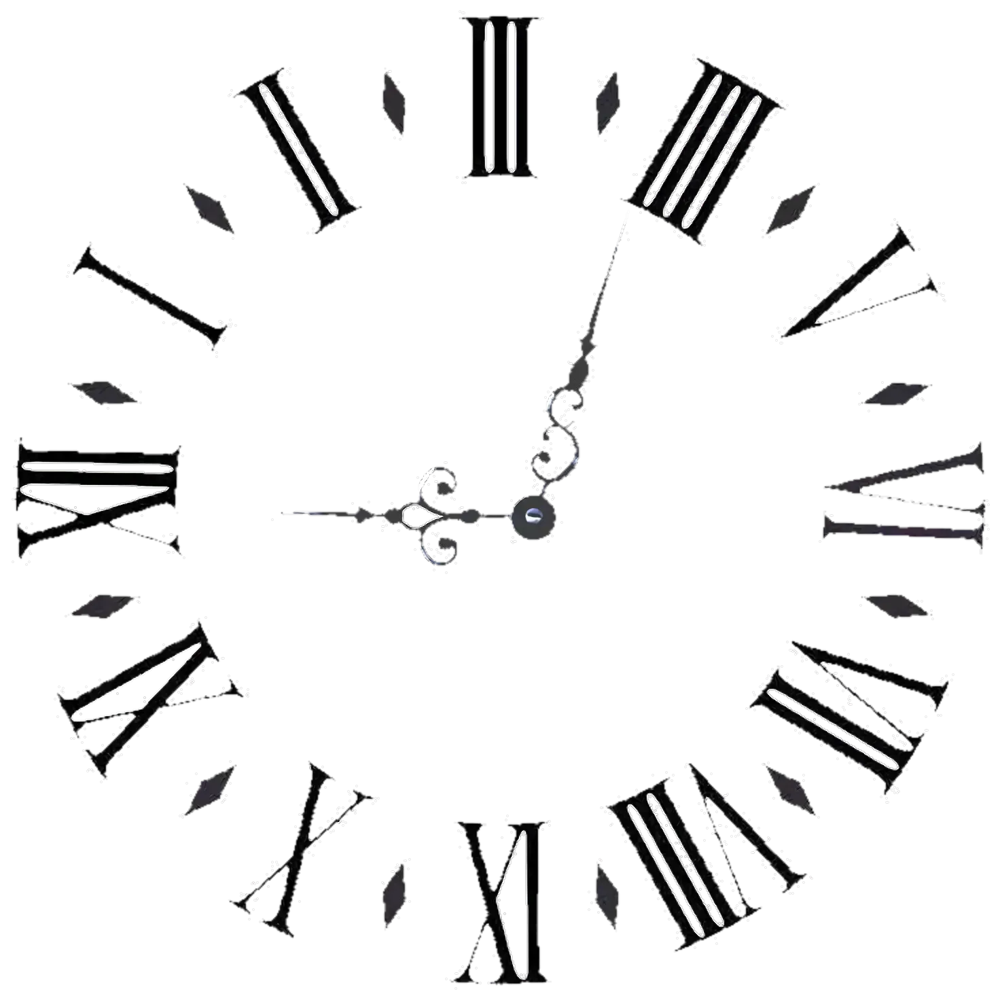
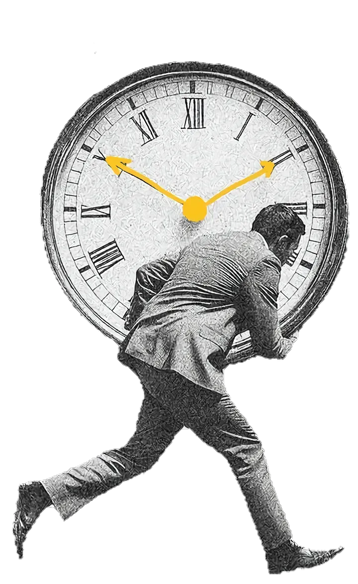
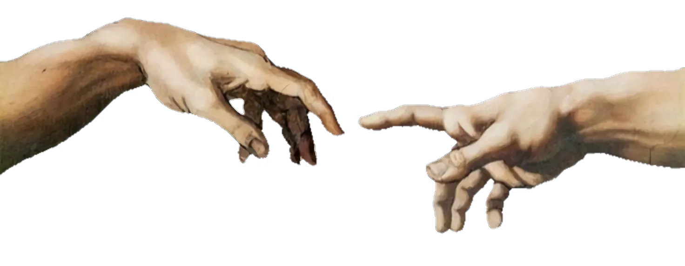

Filmes
Um Top 5 mensal construído a partir das recomendações dos nossos alunos. Confira filmes marcantes e inspiradores escolhidos a dedo por quem faz a revista.







"Nem foi tempo perdido somos tão jovens"
Conheça o projeto
A Entre Tempos é uma revista virtual desenvolvida por estudantes do Ensino Médio da Escola de Referência Professor Antônio Farias — Gravatá, PE.
É uma revista sem fins lucrativos que busca informar, provocar debates e incentivar reflexões sobre diversos temas de importância social através da poesia, da arte e da palavra.
"Entre tempos, a palavra permanece."
Um Top 5 mensal construído a partir das recomendações dos nossos alunos. Confira filmes marcantes e inspiradores escolhidos a dedo por quem faz a revista.
Fatos surpreendentes do mundo em Curiosidades Gerais e publicações Autorais, onde os próprios alunos compartilham suas vivências e interesses pessoais.
Uma galeria de arte visual. Explore as grandes obras de Artistas Conhecidos e prestigie os criativos Desenhos Autorais publicados com talento pelos nossos estudantes.
O nosso Top 10 mensal literário. Resenhas e recomendações especiais dos nossos alunos sobre livros clássicos e contemporâneos que transformam e inspiram.
A poesia que toca a alma. Aprecie os versos imortais de grandes Poetas Conhecidos e leia os emocionantes Poemas Autorais criados e publicados pelos nossos alunos.
Os sons do nosso dia a dia. Descubra as Top Músicas recomendadas pela turma, e acompanhe nossos alunos brilhando em publicações originais de Talento Musical.
Conheça as pessoas por trás de cada página, projeto e ideia.
Por de trás das câmeras